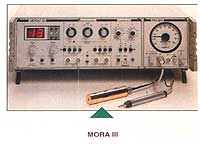

La biorésonnance avec appareil MORA est une technique de biophysique médicale fondée sur l’utilisation et la correction des oscillations électromagnétiques captées sur les méridiens et points d’acupuncture du patient lui-même, au moyen de l’appareil MORA.

L’appareil MORA capte les signaux physiologiques et les signaux pathologiques perturbateurs du patient. Il les transforme en oscillations correctrices, puis il les restitue au patient. Les énergies pathologiques sont ainsi éliminées, tandis que les oscillations physiologiques sont renforcées.
La logique du système MORA est celle de la réalité : tout est longueur d’onde. Le MORA permet ainsi d’obtenir des résultats spectaculaires là où d’autres techniques ont échoué ou auraient réclamé des traitements de longues durées.
Il peut couvrir toutes les indications habituelles de la naturopathie, en particulier :